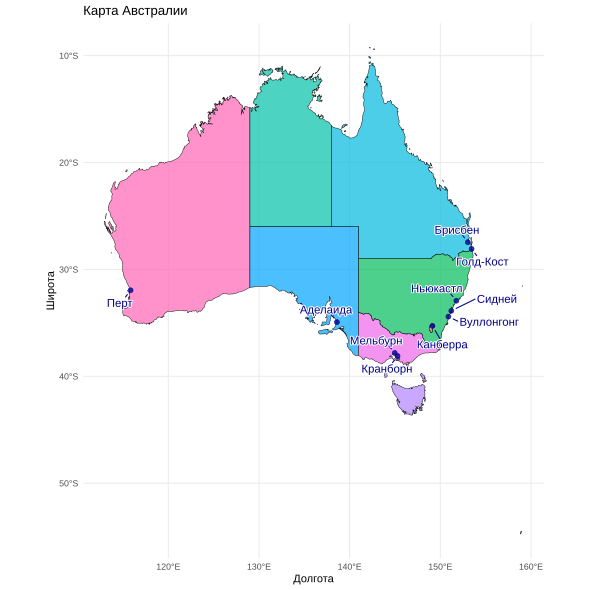

# ==============================================================================
# Карта Австралии со штатами и городами через библиотеку tmap
# ==============================================================================
# installing --------------------------------------------------------------
library(tmap)
library(sf)Linking to GEOS 3.13.1, GDAL 3.11.4, PROJ 9.7.0; sf_use_s2() is TRUE
Attaching package: 'dplyr'The following objects are masked from 'package:stats':
filter, lagThe following objects are masked from 'package:base':
intersect, setdiff, setequal, union# --- Директория ------------------------------------------------------------
root <- "D:/users/platt/shapefile/auxiliary/naturalearth/5.1.2"
# Preparing ---------------------------------------------------------------
countries <- ursa::spatial_read(file.path(root, paste0("10m_cultural/ne_10m_admin_0_countries.shp")))
states <- ursa::spatial_read(file.path(root,paste0("10m_cultural/ne_10m_admin_1_states_provinces.shp")))
cities <- ursa::spatial_read(file.path(root,paste0("10m_cultural/ne_10m_populated_places.shp")))
seas <- ursa::spatial_read(file.path(root,paste0("10m_physical/ne_10m_geography_marine_polys.shp")))
ocean <- ursa::spatial_read(file.path(root,paste0("10m_physical/ne_10m_ocean.shp")))
aus_states <- states[states$admin == "Australia", ]
cities_aus <- cities[cities$ADM0NAME == "Australia" & cities$POP_MAX > 200000, ]
state_labels <- states[states$admin == "Australia", c("name_ru")]
countries_oceania <- countries[countries$CONTINENT == "Oceania"
| countries$CONTINENT == "Asia", c("NAME_RU")]
countries_oceania <- st_transform(countries_oceania, 3577)
aus_states_proj <- st_transform(aus_states, 3577)
aus_city_proj <- st_transform(cities_aus, 3577)|>
filter(!is.na(NAME_RU))
state_labels_proj <- st_transform(state_labels, 3577) |>
mutate(label_point = st_point_on_surface(geometry),
name_label = gsub(" ", "\n", name_ru)) |>
filter(!name_ru %in% c("Виктория", "Маккуори", "Тасмания",
"остров Лорд-Хау", "Территория Джервис-Бей",
"Австралийская столичная территория"))
seas_label_proj <- st_transform(seas, 3577) |>
filter(name_ru %in% c ("Коралловое море", "Тасманово море",
"Тиморское море", "Арафурское море"))
ocean <- st_transform(ocean, 3577)
# map_borders -------------------------------------------------------------
bbox_current <- st_bbox(state_labels_proj)
x_range <- bbox_current["xmax"] - bbox_current["xmin"]
y_range <- bbox_current["ymax"] - bbox_current["ymin"]
bbox_new <- bbox_current
bbox_new["xmin"] <- bbox_current["xmin"] - (0.05 * x_range) # Влево
bbox_new["xmax"] <- bbox_current["xmax"] + (0.35 * x_range) # Вправо
bbox_new["ymin"] <- bbox_current["ymin"] - (0.15 * y_range) # Вниз
bbox_new["ymax"] <- bbox_current["ymax"] + (0.15 * y_range) # Вверх
bbox_new_sfc <- st_as_sfc(bbox_new)
# map ---------------------------------------------------------------------
tmap_plot <- tm_shape(countries_oceania, bbox = bbox_new_sfc) +
tm_polygons(fill = "mistyrose",
col = "mistyrose",
lwd = 0.5) +
# океан
tm_shape(ocean)+
tm_polygons("featurecla",
col = "lightsteelblue1",
palette = c("lightsteelblue1"))+
# штаты
tm_shape(state_labels_proj) +
tm_polygons("name_ru", fill.legend = tm_legend_hide(),
palette = "rd_yl_bu")+
tm_layout(color.saturation = 0.5)+
tm_graticules(col = "dimgray", lwd = 0.3, n.x = 4, n.y = 3, labels.size = 0.7)+
tm_text("name_label", size = 1,
col = "black",
alpha = 0.7) +
# моря
tm_shape(seas_label_proj, is.main = FALSE)+
tm_text("name_ru", size = 0.8,
col = "cyan4",
fontface = "italic",
auto.placement = TRUE,
remove.overlap = TRUE,
options = opt_tm_text(point.label = TRUE, halo = TRUE, halo.width = 0.1),
xmod = 1, ymod = 1)+
# города
tm_shape(aus_city_proj)+
tm_dots(size = 0.5, col = "blue4", shape = 21) +
tm_text("NAME_RU",
point.label.gap = 0.4,
point.label.method = "SANN",
size = 0.7, fontface = "bold",
options = opt_tm_text(point.label = TRUE, halo = TRUE, halo.width = 0.1),
xmod = -0.3, ymod = -0.3) +
tm_scalebar(position = c("left", "bottom"), text.size = 0.6) +
tm_title("Австралия",
size = 1.5,
color = "gray10",
fontface = "bold")+
tm_layout(frame.r = 10, frame.double_line = TRUE)+
tm_legend_hide()── tmap v3 code detected ─────────────────────────────────────────────────────────────────────────────[v3->v4] `tm_tm_polygons()`: migrate the argument(s) related to the scale of the visual variable
`fill` namely 'palette' (rename to 'values') to fill.scale = tm_scale().
[v3->v4] `tm_polygons()`: use 'fill' for the fill color of polygons/symbols (instead of 'col'), and
'col' for the outlines (instead of 'border.col').
[v3->v4] `tm_text()`: migrate the layer options 'auto.placement' (rename to 'point.label') to
'options = opt_tm_text()'
[tm_text()] Arguments `point.label.gap` and `point.label.method` unknown. [v3->v4] `tm_legend()`: use 'tm_legend()' inside a layer function, e.g. 'tm_polygons(..., fill.legend
= tm_legend())'
Multiple palettes called "rd_yl_bu" found: "brewer.rd_yl_bu", "matplotlib.rd_yl_bu". The first one, "brewer.rd_yl_bu", is returned.
This message is displayed once every 8 hours.